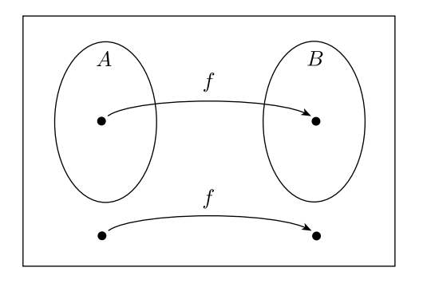

Mapping Reducibility
The goal of this lesson: formalize the concept of reducibility
We define the mapping reducibility of problem
to problem
as the ability to define a function mapping from
The goal of this lesson: formalize the concept of reducibility
We define the mapping reducibility of problem to problem
as the ability to define a function
mapping from
to
. (We will formalize this
more!)
A function is a computable function if some turing
machine
, on every input
, halts with just
on its tape.
E.g. We can show that is a computable
function by designing a TM that takes
as input and outputs
.
Note: A computable function can be a transformation of a machine
description. In other words, a TM can take a string description of a
turing machine as input and return a string
description of another machine
.
1
Language is mapping
reducible to language
, denoted
, if there is
a computable function
, where for every
,
.
The function of is called the
reduction from
to
.
If is the solution set of one problem, and
is the solution set to another problem,
we can convert questions about membership in
to questions about membership in
!
If and
is decidable, then
is decidable.
If and
is decidable, then
is decidable.
If and
is undecidable, then
is undecidable.
Let’s again show is undecidable
by showing
can be reduced to
.
Recall:
is a
Turing Machine and accepts
is
a Turing Machine and halts on input
Recall:
is a
Turing Machine and
and
and
are Turing Machines and
Let’s assume we know is undecidable, and
let’s use that to show
is also
undecidable.